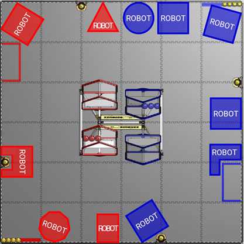

Pre-Match
G301 Don’t delay MATCHES.
DRIVE TEAM members may not cause significant delays to the start of their MATCH. Both of these conditions must be met prior to team actions being considered:
- A. the expected MATCH start time has passed, and
- B. the DRIVE TEAM has access to the ARENA.
In order for a team to cause a significant delay, the Head REFEREE must perceive that the team is neither MATCH ready (G303) nor making a good faith effort to quickly become MATCH ready.
During Qualification MATCHES, the expected start time of the MATCH is the time indicated on the MATCH schedule or ~3 minutes after the end of the previous MATCH on the same FIELD, whichever is later.
During Playoff MATCHES, the expected start time of the MATCH is the time indicated on the MATCH schedule or 8 minutes from either ALLIANCE’S previous MATCH, whichever is later
During back-to-back MATCHES, T406 is in effect, and teams may have a longer minimum break.
Teams that have 1 DRIVE TEAM member present and have informed FIELD STAFF that their ROBOT will not be participating in the MATCH are considered MATCH ready and not in violation of this rule.
If the team/ALLIANCE is not MATCH ready within 2 minutes of the VERBAL WARNING/MAJOR FOUL having been issued, and the Head REFEREE perceives no good faith effort by the DRIVE TEAM(S) to quickly become MATCH ready, the offending team’s ROBOT is DISABLED.
The intent of this rule is to provide an equitable amount of time for both ALLIANCES to prepare for each MATCH and give DRIVE TEAMS grace given extenuating circumstances that cause them to be late. Teams should avoid disrupting ARENA operations and proactively communicate with the Head REFEREE and FIELD STAFF to let them know their status.
FIELD STAFF will make a good faith effort to wait for missing or unprepared teams and will avoid beginning any MATCH when teams are not present or not MATCH ready and making good faith effort to become MATCH ready.
Once a VERBAL WARNING/MAJOR FOUL is issued, the Head REFEREE starts a 2-minute timer and makes a good faith effort to share the timer’s status with the delaying DRIVE TEAM.
In general, good faith efforts to quickly become MATCH ready are entirely for the purposes of transitioning the ROBOT into a MATCH ready state (i.e., not attempts to significantly alter a ROBOT’S capabilities). Examples of good faith efforts to quickly become MATCH ready that would not be a violation include but are not limited to:
- A. walking safely towards the FIELD with a ROBOT that a team is not actively modifying,
- B. applying quick fixes such as tape or cable ties to make the ROBOT compliant with STARTING CONFIGURATION requirements,
- C. waiting for a DRIVER STATION device to boot,
- D. actively working with field technical staff, including the FTA, to resolve an issue in a reasonable amount of time, or
- E. performing a MOMENTARY “wiggle test” to confirm communication between the DRIVER STATION and the ROBOT CONTROLLER. The ROBOT should not drive or interact with SCORING ELEMENTS (except contact with pre-loaded POLLEN) while performing this test.
G302 Limit what you bring to the FIELD.
Items brought to the FIELD to be used for a MATCH, in addition to the ROBOT and OPERATOR CONSOLE, must fit in the team’s designated ALLIANCE AREA, be worn or held by members of the DRIVE TEAM, or be an item used as an accommodation (e.g., crutches, cushions, kneeling mats, or single-step stools no more than 12 in. tall (30.5 cm) that are designed to be stood on and are locked such that they do not roll/fold).
Regardless of whether the equipment fits the criteria above, it may not:
- A. be employed in a way that disrupts normal ARENA operations or introduces a safety hazard,
- B. extend more than 6 ft. 6 in. (~198 cm) above the TILES,
- C. communicate with anything or anyone outside of the ARENA with the exception of medically required equipment,
- D. block visibility for FIELD STAFF or audience members, or
- E. jam or interfere with the remote sensing capabilities of another team.
Exceptions to G302.B are granted for MOMENTARY extensions above 6 ft. 6in. and for individuals wearing PPE or reasonable decorative apparel such as hats, headbands, etc.
It is not a violation of this rule to bring an alignment device to the FIELD to aid pre-MATCH ROBOT set-up and alignment. The use of any alignment devices should not delay MATCH start in violation of G301.
Examples of equipment that may be considered a safety hazard in the confined space of the ALLIANCE AREA include but are not limited to: a ladder or a large signaling device.
Using an item that has wireless communications disabled complies with G302.C above.
Examples of jamming or interfering with remote sensing capabilities include but are not limited to: mimicking the FIELD AprilTags and shining bright lighting or laser pointers onto the FIELD during a MATCH.
G303 ROBOTS on the FIELD must come ready to play a MATCH.
A ROBOT must meet all following MATCH-start requirements:
- A. does not pose a hazard to humans, ARENA elements, or other ROBOTS,
- B. meets all the requirements from Section 3.3 MATCH Eligibility Rules including those regarding inspection/re-inspection,
- C. is the only team-provided item left in the FIELD, and
- D. has ROBOT SIGNS that indicate the correct ALLIANCE color (see R402).
For assessment of many of the items listed above, the Head REFEREE is likely to consult with the LRI.
G304 ROBOTS must be set up correctly on the FIELD.
A ROBOT must be positioned on the FIELD such that it meets all of the following requirements:
- A. fully contained on its own ALLIANCE’s side of the FIELD (FIELD columns A, B, C for red, or FIELD columns D, E, F for blue) (Figure 9‑4),
- B. not attached to, entangled with, or suspended from any FIELD element,
- C. touching the FIELD perimeter wall,
- D. not contacting or in the scoring volume of a FLOWER,
- E. not in the LOADING ZONE,
- F. confined to its STARTING CONFIGURATION (see R102 and R103),
- G. in contact with exactly 4 POLLEN pre-loads as described in Section 10.3.1 SCORING ELEMENTS, and
- H. fully motionless following completion of OpMode initialization,
G304.A requires the ROBOT to be fully contained within the FIELD perimeter and not overhang the FIELD perimeter wall.
Each ROBOT must start contacting 4 POLLEN either located in or on the ROBOT, or on the TILES contacting the ROBOT. ROBOTS that are no-shows for their MATCH will have their POLLEN placed in the LOADING ZONE against the perimeter wall.
Figure 11‑1 shows examples of several possible legal ROBOT starting locations.

G305 Teams must select an OpMode.
An OpMode must be selected on the DRIVER STATION app and initialized by pressing the INIT button. If this OpMode is an AUTO OpMode, the 30 second AUTO timer must be enabled.
This rule requires all teams to select and INIT an OpMode, regardless of whether or not an AUTO OpMode is planned to be used during AUTO. FIELD STAFF will use this as an indication that a team is ready to start the MATCH.
Teams without an AUTO OpMode should consider creating a default AUTO OpMode using the BasicOpMode sample and use the auto-loading feature to automatically queue up their TELEOP OpMode.
This is a condensed, unofficial reference to help find rules quickly. Official rules always come from the current FTC BIOBUZZ Competition Manual. This site is not a substitute for it. Generated 2026-09-13.